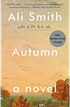
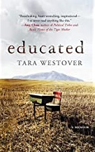
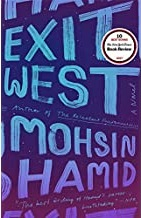
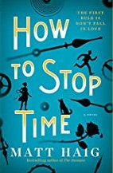
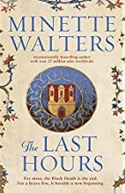
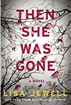

All books are available on Amazon The images and text descriptions were obtained from the Amazon website.
You can track your book collection using this Book Collection Excel File
Book Title: A B C D E F G H I J K L M N O P Q R S T U V W X Y Z (non-fiction)

Author: Ali Smith
Description:
The first of four novels in a shape-shifting series, wide-ranging in timescale and light-footed through histories. Fusing Keatsian mists and mellow fruitfulness with the vitality, the immediacy and the colour-hit of Pop Art--via a bit of very contemporary skulduggery and skull-diggery-- Autumn is a witty excavation of the present by the past. The novel is a stripped-branches take on popular culture, and a meditation, in a world growing ever more bordered and exclusive, on what richness and worth are, what harvest means. Autumn is part of the quartet Seasonal: four stand-alone novels, separate yet interconnected and cyclical (as the seasons are), exploring what time is, how we experience it, and the recurring markers in the shapes our lives take and in our ways with narrative.
Author: Geoff Johns
Description:
Who are the three jokers?
Batman doesn't understand how or why, but the fact is certain: the man he has spent a lifetime chasing isn't one man at all. There are three Jokers. Now that he knows the unbelievable truth, Bruce needs real answers. Joined by Barbara Gordon and Jason Todd, two former victims of the Joker's brutality, the Dark Knight is finally on a path to defeat the madman once and for all. Every last one of him.
Geoff Johns (Doomsday Clock, Batman: Earth One) and Jason Fabok (Justice League: The Darkseid War) reunite to present one of the most highly anticipated comics events in years! Collects Batman: Three Jokers #1-3.

Author: Tara Westover
Description:
Tara Westover was seventeen when she first set foot in a classroom. Instead of traditional lessons, she grew up learning how to stew herbs into medicine, scavenging in the family scrap yard and helping her family prepare for the apocalypse. She had no birth certificate and no medical records and had never been enrolled in school.
Westover’s mother proved a marvel at concocting folk remedies for many ailments. As Tara developed her own coping mechanisms, little by little, she started to realize that what her family was offering didn’t have to be her only education. Her first day of university was her first day in school—ever—and she would eventually win an esteemed fellowship from Cambridge and graduate with a PhD in intellectual history and political thought.

Author: Moshin Hamid
Description:
In a country teetering on the brink of civil war, two young people meet—sensual, fiercely independent Nadia and gentle, restrained Saeed. They embark on a furtive love affair, and are soon cloistered in a premature intimacy by the unrest roiling their city. When it explodes, turning familiar streets into a patchwork of checkpoints and bomb blasts, they begin to hear whispers about doors—doors that can whisk people far away, if perilously and for a price. As the violence escalates, Nadia and Saeed decide that they no longer have a choice. Leaving their homeland and their old lives behind, they find a door and step through. . . .
Exit West follows these remarkable characters as they emerge into an alien and uncertain future, struggling to hold on to each other, to their past, to the very sense of who they are. Profoundly intimate and powerfully inventive, it tells an unforgettable story of love, loyalty, and courage that is both completely of our time and for all time.

Author: Matt Haig
Description:
Tom Hazard has a dangerous secret. He may look like an ordinary 41-year-old, but because of a rare condition, he's been alive for centuries. From performing with Shakespeare, to exploring the high seas with Captain Cook, to sharing cocktails with F. Scott Fitzgerald, Tom has seen a lot. But now, after over 400 years of reinventing himself to escape detection, he just wants an ordinary life. The only rule he has to follow is Don’t fall in love.
When Tom catches the eye of a captivating woman named Camille at the dog park, everything begins to unravel. Caught between the danger of discovery and the desire to build a real life, Tom learns that the thing he can't have might just be the thing that saves him.
A wild, bittersweet, time-travelling story, How to Stop Time is about losing and finding yourself, about the certainty of change, about the perils of love and about the mistakes that humans are doomed to repeat. It asks the question, How many lifetimes does it take to learn how to live?
Author: Karen Swan
Description:
Running from heartbreak, Chloe Marston leaves her old life in London for a fresh start in New York. Working at a luxury concierge company, she makes other people’s lives run perfectly, even if her own has ground to a halt. But a terrible accident forces her to step into a new role, up close and personal with the company’s most esteemed and powerful clients. Charismatic Joe Lincoln is one of them and his every wish is her command, so when he asks her to find him a secluded holiday home in the Greek Islands, she sets about sourcing the perfect retreat.
But when Tom, her ex, unexpectedly shows up in Manhattan and the stability of her new life is thrown off-balance again, she jumps at the chance to help Joe inspect the holiday house; escaping to Greece will give her the time and space to decide where her future truly lies. Tom is the man she has loved for so long but he has hurt her before – can she give him another chance? And as she draws closer to Joe, does she even want to? As magnetic as he is mysterious, there’s an undeniable chemistry between them that she can’t resist.

Author: Minette Walters
Description:
Widowed by her husband’s death from the pestilence, Lady Anne assumes control of his people’s future—200 bonded serfs without rights of ownership to land. Strong, compassionate and resourceful—qualities she kept hidden from the husband she loathed and despised—Lady Anne chooses a bastard slave, Thaddeus Thurkell, to act as her steward. Together, they decide to quarantine Develish by bringing the serfs inside a defendable moat and sharing the available food amongst all. With this sudden overturning of the accepted social order, where serfs exist only to serve their lords, conflict arises when they’re given a voice. Ignorant of what is happening in the world outside, they wrestle with themselves, with God and the terrible uncertainty of their futures. They fear starvation when their food runs out but they fear the pestilence more. Who amongst them has the courage to leave the safety of the demesne in search of supplies and news? And how safe is anyone in Develish when an unexplained murder threatens the uneasy status quo?
In The Last Hours Minette Walters brings all her trademark intelligence to a totally new timeframe—creating a vivid and powerful drama through compelling characters whose journey readers will be drawn to. The Last Hours is an exciting new direction from an established best-selling author and Minette is currently writing the sequel.

Author: Lisa Jewell
Description:
Ellie Mack was the perfect daughter. She was fifteen, the youngest of three. She was beloved by her parents, friends, and teachers. She and her boyfriend made a teenaged golden couple. She was days away from an idyllic post-exams summer vacation, with her whole life ahead of her.
And then she was gone.
Now, her mother Laurel Mack is trying to put her life back together. It’s been ten years since her daughter disappeared, seven years since her marriage ended, and only months since the last clue in Ellie’s case was unearthed. So when she meets an unexpectedly charming man in a café, no one is more surprised than Laurel at how quickly their flirtation develops into something deeper. Before she knows it, she’s meeting Floyd’s daughters—and his youngest, Poppy, takes Laurel’s breath away.